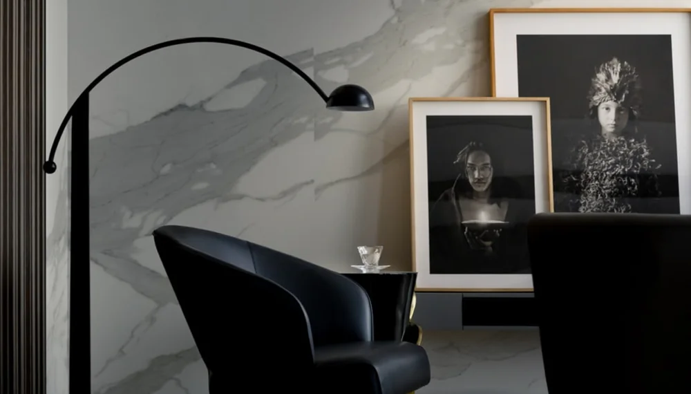

CÓRDOBA CAPITAL
Atención presencial
Un espacio de atención psicológica en zona centro de Córdoba Capital.
Un encuentro en el mismo lugar.PSICOLOGÍA · JÓVENES Y ADULTOS
Lic. María Victoria Romero Psicóloga | MP 15864
Atención psicológica desde un enfoque integrativo. Presencial en Córdoba Capital y virtual en toda Argentina.
01 / SOBRE MÍ
María Victoria Romero
LICENCIADA EN PSICOLOGÍA · MP 15864Soy María Victoria Romero, licenciada en Psicología.
Mi trabajo se desarrolla desde un enfoque integrativo, ofreciendo un espacio de escucha y acompañamiento para jóvenes y adultos.
Un encuentro para conversar sobre lo que estás viviendo, con atención a tu experiencia y a los tiempos de tu proceso.
02 / ACOMPAÑAMIENTO PSICOLÓGICO
Hay momentos en los que necesitamos detenernos, poner en palabras lo que nos pasa y explorar nuevas maneras de comprender nuestras experiencias.
El acompañamiento psicológico puede ofrecer un lugar de escucha, reflexión y trabajo personal, respetando los tiempos y necesidades de cada persona.
03 / ENFOQUE TERAPÉUTICO
Comprender a cada persona de manera amplia.
El enfoque integrativo contempla diferentes perspectivas de la psicología y considera tus experiencias, emociones y contexto.
Una mirada que busca comprender cómo se relacionan las distintas dimensiones de tu vida.
04 / MODALIDADES
CÓRDOBA CAPITAL
Un espacio de atención psicológica en zona centro de Córdoba Capital.
Un encuentro en el mismo lugar.TODA ARGENTINA
Sesiones online para jóvenes y adultos, desde un lugar tranquilo y privado.
Un espacio que también puede ser a distancia.
05 / CÓMO COMENZAR
Podemos empezar por una conversación.
Contame que te gustaría consultar.
Conversamos sobre horarios y modalidad.
Acordamos los detalles para comenzar.
06 / PREGUNTAS FRECUENTES
Algunas respuestas para
dar el primer paso.
Se ofrecen ambas modalidades: presencial en Córdoba Capital y virtual para personas de toda Argentina.
En zona centro de Córdoba Capital. Podés consultar los detalles de ubicación al coordinar el encuentro.
Sí. La atención virtual está disponible para jóvenes y adultos de toda Argentina.
Podés escribirme por WhatsApp al +54 9 351 550 7202 para consultar disponibilidad y modalidad de atención.
07 / CONTACTO
Si querés consultar por la atención psicológica, podés escribirme para conocer las modalidades y disponibilidad.
Escribirme por WhatsApp {{ARROW}}+54 9 351 550 7202